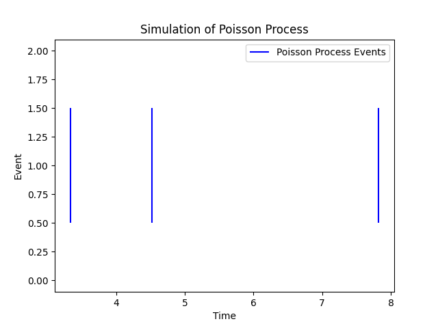

Introduction
The Poisson Process is a stochastic process used to model the occurrence of rare events in continuous time. It is characterized by events that happen independently, and the time between consecutive events follows an exponential distribution. The process is named after the French mathematician Siméon Denis Poisson, who introduced it in the early 19th century.
Properties:
- Independence: Events in a Poisson Process are independent, meaning the occurrence of one event does not influence the timing of the next.
- Stationarity: The process is stationary, implying that the probability of a certain number of events occurring in a fixed time interval remains constant.
- Memoryless Property: The time until the next event is memoryless, meaning it does not depend on the past. This is a consequence of the exponential distribution.
Simulation of the Poisson Process:
The script demonstrates the simulation of a Poisson Process with a specified arrival rate. The inter-arrival times between events are generated from an exponential distribution, and cumulative sums yield the arrival times. The resulting plot showcases the random and independent occurrence of events over time.
Practical Significance:
Poisson Processes find applications in various fields, including telecommunications, queuing theory, and biology. They are particularly useful for modeling rare events, such as the arrival of customers at a service point, occurrences of earthquakes, or particle decay in physics.
Poisson Process Plot:
Conclusion:
Understanding the Poisson Process provides a powerful tool for modeling and analyzing the timing of rare events in continuous time. Its mathematical simplicity and wide applicability make it a valuable concept in both theoretical and practical contexts.